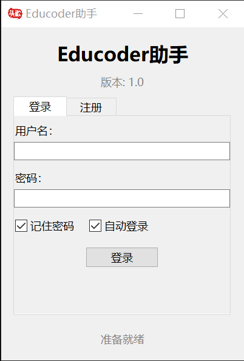
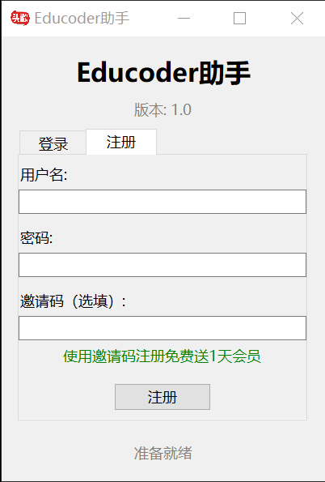

登录：打开软件后，您将看到登录界面。请输入您的用户名和密码进行登录。

登录界面示例图
注册：新用户需要注册账号。注册时，需要输入邀请码。成功注册后，邀请人和被邀请人均免费获得一天会员。

注册界面示例图
重要规则：
- 同一设备上，注册的第一个账号输入邀请码可获得会员，第二个及之后的账号即使输入邀请码也不再赠送会员。
- 用户名与设备ID唯一绑定，一个账号只能在注册时的设备上使用。
- 此机制防止同一个人开通会员后将账号分享给多人使用。